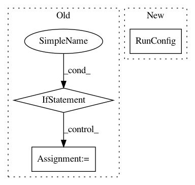

6a0dda1ff86915d15cba0c9c12a9fc8a5e71a1a7,official/mnist/mnist.py,,run_mnist,#Any#,156
Before Change
num_gpus = flags_core.get_num_gpus(flags_obj)
multi_gpu = num_gpus > 1
if multi_gpu:
// Validate that the batch size can be split into devices.
distribution_utils.per_device_batch_size(flags_obj.batch_size, num_gpus)
// There are two steps required if using multi-GPU: (1) wrap the model_fn,
// and (2) wrap the optimizer. The first happens here, and (2) happens
// in the model_fn itself when the optimizer is defined.
model_function = tf.contrib.estimator.replicate_model_fn(
model_fn, loss_reduction=tf.losses.Reduction.MEAN,
devices=["/device:GPU:%d" % d for d in range(num_gpus)])
data_format = flags_obj.data_format
if data_format is None:
data_format = ("channels_first"
if tf.test.is_built_with_cuda() else "channels_last")
After Change
distribution_strategy = distribution_utils.get_distribution_strategy(
flags_core.get_num_gpus(flags_obj), flags_obj.all_reduce_alg)
run_config = tf.estimator.RunConfig(
train_distribute=distribution_strategy, session_config=session_config)
data_format = flags_obj.data_format
if data_format is None:
data_format = ("channels_first"
In pattern: SUPERPATTERN
Frequency: 3
Non-data size: 3
Instances
Project Name: tensorflow/models
Commit Name: 6a0dda1ff86915d15cba0c9c12a9fc8a5e71a1a7
Time: 2018-08-28
Author: jaeman1.park@gmail.com
File Name: official/mnist/mnist.py
Class Name:
Method Name: run_mnist
Project Name: tensorflow/models
Commit Name: 823da3187f25593275f437ec86624b42c8395fbc
Time: 2018-04-19
Author: taylorrobie@google.com
File Name: official/resnet/resnet_run_loop.py
Class Name:
Method Name: resnet_main
Project Name: Qiskit/qiskit-aqua
Commit Name: 5698b1cb39cd840fb6ec58ab98ad8ab099f6e1ea
Time: 2019-01-29
Author: dongreenberg2@gmail.com
File Name: qiskit/aqua/utils/circuit_cache.py
Class Name: CircuitCache
Method Name: load_qobj_from_cache